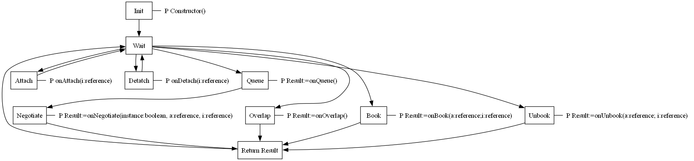

When an agent requires assistance from another agent at runtime, a search is conducted to locate a suitable remote agent interface. To ensure the appropriateness and compatibility of the sought agent interface, a negotiation process starts between the agents. This negotiation process entails agents striving to establish an agreement on how to effectively cooperate and synchronize their respective skills. An interface serves as a means of depicting compatibility, i.e., when two interfaces match they can be treated as compatible.
The functions of an interface, all are optional:
| Function | Description |
|---|---|
| onNegotiate(planning:boolean; agentObject:reference; interfaceObject:reference) : integer | Called during negotiation, if planning is true this is done during planning and all runtime variables might not be updated |
| onBook(a:reference; i:reference) : boolean | Called when asked to book |
| onOverlap : boolean | Called to check for overlap |
| onQueue() : boolean | Called before negotiation to preprocess the queue |
The procedures of an interface (they must be declared as procedures) and are optional:
| Procedure | Description |
|---|---|
| onAttach(i:reference) | Called when an interface has been attached |
| onDetach(i:reference) | Called when an interface has bee detached |
| onTransfer(i:reference) | Called when post action transfered is executed |
| onUnbook(a:reference; i:reference) | Called when asked to unbook |
Each function or procedure can be overloaded to replace the built in default mechanism.

The onAttach procedure is called when the interface is attached to another interface.
The onDetach procedure is called when the interface detached from another interface.
The onTransfer procedure is called when a transfer operation is done.
onNegotiate is called if another agent ask for a negotiation. It is possible to return -1 to state that the interface is not compatible or >=0 to accept, a value >=0 indicate a cost. The reference variables agentObject and interfaceObject are references to the agent and the specific interface that wants to negotiate. Note, the reference variables are only used during negotiation with an interface. For skills they do not exist.
By setting the interface property QueueRequest to true, the global interface variable queue is enabled and the onQueue() function is called before onNegotiate(), allowing the agent to inspect and manage incoming requests, see advanced interface concepts.
The onOverlap function is called to check for overlaps. If it returns true the interface is booked to avoid overlap actions.
onBook is called if another agent interface want to book the interface. It is possible to return false to state that the interface do not agree on the booking request. The reference variables a and i are references to the agent and the specific interface that wants to book.
onUnBook is called if another agent interface want to unbook the interface. The reference variables a and i are references to the agent and the specific interface that wants to book.